这本哲学论述是我于1795年在巴黎高等师范学院开设的概率论讲座的扩展版本，该讲座是根据国民公会的法令进行的，那时，我与拉格朗日被聘为数学教授．最近关于同一个主题我出版了一部题为《概率的分析理论》的著作．在这里，我将不用分析的方法来呈现《概率的分析理论》中的原理和一般结果，而是要讨论它们在生活中一些最重要的问题中的应用．实际上，对于生活中的大部分问题，最重要的只是概率问题，严格来说，几乎所有的知识都只是偶然性的，我们能够确切知晓的知识只有一小部分，甚至数学科学本身，发现真理的首要手段——归纳法、类推法——都是建立在概率的基础上的，因此，整个的人类知识系统都与由这一主题引出的理论密切相关．毋庸置疑，这里的论述必定是引人入胜的，我们将看到，即使在关于理性、正义和人性的永恒法则中，只有那些有益的偶然性才能与它们持久相联，所以，遵从这些法则就会受益匪浅，无视它们则危害极大：在飘摇不定的境况之中，（对）其概率（的探究）最终会盛行起来，就像（追求）彩票中的运气一样．我希望本书中所给出的思考能够引起哲学家们的关注，并将其当作特别值得他们思考的一个主题．
一切事件，即使是那些微不足道且表面上看来似乎不符合伟大的自然法则的事件，也都如太阳的运转一样，必然是自然法则的结果．由于对这类事件与整个宇宙系统之间联系的无知，人们依据它们是有规则地重复发生，还是无规则地出现，而把它们分别想象为是基于一些终极因或者是基于偶然性．但这些虚构的原因随着知识范围的拓宽而逐渐减少，并在正确的哲学面前彻底消失，这种哲学将虚构的原因仅仅看成是我们对真实原因无知的表现．
一个事物如果没有产生它的原因，它就不能发生，基于这样一个显而易见的原理，当前事件就与先前的事件联系起来了．这一称作充足理由律（principle of sufficient reason）的公理甚至可扩展到无足轻重的行动中．没有使之发生的确定的动机，最自由的意志也不可能致其发生．设想有两个处于完全相似环境中的状态，并且意志在其中一个状态中起作用，而在另一个状态中不起作用，我们就说意志的选择是一个没有原因的结果．这就是莱布尼兹所称的伊壁鸿鲁派的盲目的偶然性．这样一种相反的观点只是心智的一种幻觉，由于我们看不到在漫不经心的状况下使意志选择捉摸不定的原因，便想当然地认为选择是由其自身毫无来由地做出的．
因此，我们应该把宇宙的目前状态看作是它的先前状态的结果，并且是以后状态的原因．一位万能的智慧者（an intelligence）能够在给定的一瞬间理解使自然界生机昂然的全部自然力，而且能够理解构成自然的存在的各自的状态，如果这个智慧者广大无边到足以将所有这些资料加以分析，将宇宙中最巨大天体的运动和最轻的原子的运动都包含在一个公式中．那么对于这个智慧者来说没有任何事物是不确定的，未来如同过去一样在他的眼中将一览无余．人类的心智在致力于天文学上所表现出来的完美中，给出了与这一智慧者微弱的相似性．人类在力学和几何学上的发现，加上万有引力的发现，使它能够用相同的分析表达式去理解宇宙系统的过去状态和未来状态．通过把同一方法应用于某些其他的知识对象，人类已能将观察到的现象归结为一般规律，并且预见到在给定条件下应当产生的结果．所有这些探索真理的努力都倾向于引导人类心智不断地回到我们刚才所提到的广大无边的智慧者那里去，但是，人的心智距这一智慧者仍有无穷之远．人类所特有的这种倾向性正是人类优于动物之处；人类在这个方面的进步正是区分民族、时代的标志，并构成了他们真正的荣耀．
我们不妨回忆一下过去，就在那并不遥远的年代，不寻常的暴雨、严酷的干旱、拖着长长尾巴的彗星、日食和月食、北极光，一般说来，所有的异常现象都被看成是天神愤怒的种种表现．为了免遭灭顶之灾，人们祈求上帝，但没有人祈祷星星和太阳停止运行：观察不久就证明这种祈祷显然是徒劳的．但是，由于这些现象的出现和消失的时间间隔很长，似乎与自然的秩序相违背，因此人们把此想象为是上帝被地球上的罪孽所激怒，而制造出这些现象，用它的报复来警告人类．因此，1456年彗星长长的尾巴引起的惊恐遍及欧洲，而土耳其人推翻东罗马帝国的迅速成功本来就已使欧洲陷入一片惊慌之中．这颗彗星周期性地出现了四次以后，它在我们中间激起了一种不同以往的吸引力．在此期间所获得的关于宇宙系统规律的知识，已经消除了由于我们对人类与宇宙的真正关系的无知而引起的恐惧——哈雷通过识别出这颗彗星就是在1531年、1607年和1682年出现的同一颗彗星，预测这颗彗星下一次出现的时间应在1758年年底或1759年年初．知识界急不可耐地等待着它的出现，这将使科学中已经做出的最伟大的发现之一得到证实，并且应验塞涅卡（Seneca）在论及那些从极高处降落下来的星体时所作的预告：“通过几个世纪的持续研究，这一天终将会到来，现在隐藏着的事情将清晰地出现在我们的眼前．并且，子孙后代将为如此显而易见的真理竟为我们视而不见而感到惊愕．”然后，克莱罗（Clairaut）担当了分析由于两颗大行星——木星和土星——的作用而引起的该彗星的摄动的工作．在作了大量的计算以后，他确定了这颗彗星下一次大约于1756年4月初经过近日点，不久，这就被观察结果所证实．毫无疑问，天文学在彗星运动中所揭示出来的规律性也存在于一切其他现象中．
一个简单的空气分子或者蒸气分子所描画的曲线以一种像行星轨道一样确定的方式受到控制；它们之间仅有的不同只是由我们的无知所引起的．
概率部分地与这种无知有关，部分地与我们的知识有关．我们知道，三个或者更大数目的事件中有一个事件应该出现，但是没有任何东西诱使我们相信它们中的某一事件会发生，而其他事件不会发生．在这种不可确定的情况下，我们不可能肯定地预言它们的发生．然而，很可能这些事件中随意选择的一个事件将不发生，因为我们看到几种等可能的情形排斥该事件的发生，而有利于该事件发生的情形仅仅只有一个．
有关偶然事件的理论包括将所有同类的事件化归为一定数目的等可能的情形，也就是说，化归为我们对它们的存在同样不能肯定的几种情形．有关偶然事件的理论还包含：对于求解其概率的事件，要求出对于该事件有利的情形数目．有利情形的数目与所有可能情形的数目之比是这一概率的量度，因此这个概率只不过是一个分数，其分子是有利情形的数目，分母是所有可能情形的数目．
上述概率概念假定：有利情形的数目和所有可能情形的数目以相同的比率增加，概率将会保持不变．为了确信这一点，设有两个瓮A和B，第一个瓮里装有四个白球和两个黑球，第二个瓮里仅装有两个白球和一个黑球．假设，第一个瓮里的两个黑球由一根线系着，一旦它们中的一个被抓住，这根线就断开，再假设四个白球也按这种方式形成两个相似的系统．所有有利于抓住黑球系统中的一个球的机会都将导致一个黑球的取出．假如现在连接球的线并没有断裂，显然，所有可能事件的数目不会改变，抽取黑球的有利事件的数目也不会改变，但是两只球将同时从瓮中被取出；那么从A瓮中取出一只黑球的概率将与开始时候是一样的．但是，对于B瓮的情形，唯一不同的是这个瓮里的三个球将会被由固定相联的两个球的三个系统所代替．
当所有的情形都有利于一个事件时，偶然性就变成了其表示值为1的确定性．在这种条件下，确定性与偶然性是可比较的，尽管在两种心智状态之间也许存在着一个本质的区别，当真理被严格地向心智展示出来时，或者当错误的微弱原因仍然被察觉出来时．
在只是可能的事情中，信息的不同——关于它们每个人都有自己的信息——是对于同样对象所持有的不同观点的主要原因之一．例如，假设有三个瓮，A、B和C，其中一个瓮仅有黑球，而其他两个瓮仅有白球．从C瓮里取出一个球，求这个球是黑球的概率．假如我们不知道这三个瓮中的哪一个瓮只有黑球，从而没有理由认为只装有黑球的是C瓮而不是B瓮或A瓮，那么，这三个假设就被看作是等可能的，又因为仅在第一种假设中才能取出一个黑球，所以取出黑球的概率等于1/3.假如已知A瓮里只装有白球，那么不确定性只涉及B瓮和C瓮，从C瓮中取出的一个球是黑球的概率就为1/2.最后，假如我们确知A瓮和B瓮里只装有白球，那么，偶然性就变成了确定性．
因此，一件被众多的人所阐述的事情，会因听者所拥有的信息程度的不同而存在着不同的可信度．假如报告该事件的人对此事完全相信，并且由于他的地位和品格，激起了听众的极大信任，那么，他的报告，无论多么地离奇，对毫不知情的听众来说，与同一人所做的普通报告一样，将被赋予同样程度的可能性，他们将会完全相信这件事．但是，如果某个听众知道，同一件事被其他同样值得信赖的人们否决过，那么他就会发生疑问，这件事就会受到已有先入信息的听众的怀疑，他们会拒斥之，即使它为事实所确证或与永恒的自然规律相符合．
在蒙昧时代，充斥于整个世界的谬误之所以能传播，正是由于大众对他们认为是最见多识广的人的看法的轻信，在最重大的生活问题上，大众已习惯于相信他们．巫术和占星术为我们提供了两个极好的例子．人们不加检验地就接受这些在幼年时期就被灌输的错误东西，它们以大众的普遍信任作为基础而得以在相当长的时期内维持它们的（权威）地位．但是，在启蒙者的思想中，科学的进步终将摧毁它们，原先通过模仿和习惯的力量而使那些谬误如此广泛地传播开来，启蒙者也通过相同的方式使这些谬误甚至可以在公众中归于消失．这种力量——道德世界的最丰富的源泉——在整个国家中建立和保持了与别处以同样权威维持着的完全相反的观念．如果上述差别往往只是由于我们所处的环境氛围而导致的种种不同观点而引起的，那么，在对待不同于我们的观点上是多么不应该迁就纵容啊！让我们给予那些没有足够判断力的人们以启蒙，使他们成为明智之士．但是，我们首先应该批判地检查我们自己的观点，公正地权衡它们各自的概率．
此外，观点的差异还取决于每个人如何权衡已知信息对他的影响．概率论所基于的思考是如此的复杂微妙，以至于两个人依据同样的信息而得出不同的结果是不足为奇的，尤其是在处理极其复杂的问题时．下面我们来讨论这个理论的一般原理．
原理一——这些原理中的第一条原理是概率的定义，正如以前阐述过的那样，概率是有利情形数与所有可能情形数之比．
原理二——在这里假设所有情形是等可能的．如果它们并不是等可能的，就首先得确定其每个（情形）的可能性，对它们的精确估计是偶然事件的理论的最困难之处．如此，此概率就为每个有利情形的可能性之和．下面我们举例说明之．
假定我们向空中掷一枚大而薄的硬币，硬币的两个相反的面是完全类似的，我们称之为正面和反面．我们来求掷两次至少有一次出现正面的概率．很明显，会出现四种等可能情形，即第一次和第二次都出现正面；第一次出现正面，第二次出现反面；第一次出现反面，第二次出现正面；最后是两次都出现反面．前三种情形是有利于我们欲求其发生概率的事件，因此这一概率等于3/4.所以，硬币投掷两次至少出现一次正面，这个事件发生的可能性就是3比1.
在这一游戏中，我们可以只数出三种不同的情形，即第一次出现正面，略去掷第二次；第一次出现反面，第二次出现正面；最后是第一次和第二次都出现反面．如果我们同意达朗贝尔的意见，认为这三种情形是等可能的，这一概率将减少为2/3.但是很明显，掷第一次出现正面的概率是1/2，而其他两种情况的概率是1/4，第一种情形是一个简单事件，它相当于下述两个事件的复合：掷第一次和掷第二次时都出现正面；掷第一次时出现正面，第二次出现反面．如果我们按照第二原理，把掷第一次出现正面的可能性1/2与掷第一次出现反面第二次出现正面的可能性1/4相加，我们就会得到所要求的3/4的概率，这与我们所假定的掷两次时得到的结果是一致的．这一假定丝毫没有改变对这一事件下赌注的人的运气：它只是有助于把各种不同的情形简化为等可能的情形．
原理三——概率论的最重要问题之一，并且也是最易引起错误的，是概率由于相互结合而如何增加或减少的．如果各事件是彼此独立的，那么其组合存在的概率是其各自的概率之积．[1]因此，掷一枚骰子出现一点（ace）的概率为1/6，而同时掷两枚骰子出现两点的概率为1/36.一枚骰子的每一面都能与另一枚骰子的六面相结合，实际上就有36种等可能情形，其中只有一种情形出现两点．一般而言，一简单事件在同样条件下连续发生给定次数的概率就等于以这一简单事件的概率为底以该次数为指数的幂．因为一个小于1的分数的连续乘幂会不断地减小，那么基于一连串很大可能性的一个事件将变得极其不可能．假定由二十位证人以这样一种方式来告诉我们一件事情：第一个人告诉第二个人，第二个人告诉第三个人，如此等等；再假定每一证言的真实性都为分数9/10，那么由这些证言得到事实真相的概率将小于1/8.我们对概率的这一衰减所能作的最好比较就是几片玻璃的插入所引起的物体亮光的衰减，很少几片玻璃就足以使一个物体从我们的视野中消失，而一片玻璃却可以使我们清晰地看见这一物体．当历史学家观察经过了连续数代的事件时，他们对于事件概率的这一衰减现象，似乎没有给予足够的重视，如果用这种方式加以检验的话，许多为人们信以为真的历史事件至少是值得怀疑的．
在纯数学科学中，最遥远的推论结果也保持着与从中推导出它们的原理相同的确定性．在应用分析方法于物理学时，结论里也保持着事实或经验的所有确定性．但是，在道德科学中，每一个推论都是从位于它之前的推论以一种可能的方式导出的，无论这些推演的可能性有多大，错误的可能性却随着推演次数的增加而增加，最终，在距正确法则很远的推演结果中，谬误的可能性会超过真相的可能性．
原理四——当两个事件彼此相关时，复合事件的概率为第一事件的概率与在第一事件发生的条件下第二事件发生的概率之积．[2]因此，在前述三个瓮A、B、C的情形中，其中两个瓮里仅只装有白球，一瓮里只装有黑球；从C瓮中抽取出白球的概率为2/3，因为三个瓮里只有两个瓮里装有白球．但已从C瓮取出白球后，关于只装有黑球的瓮的不确定性就仅限于A瓮和B瓮了．从B瓮里抽取出一个白球的概率为1/2、2/3与1/2之积，即1/3就是从B瓮和C瓮里同时抽出两个白球的概率．
从这个例子中可看出过去事件对未来事件概率的影响．从B瓮里取出一个白球的概率，起先为2/3，但当已经从C瓮里取出白球之后，其概率就变成了1/2；如果从C瓮里取的是黑球，那么从B瓮里取出白球便成了必然事件．我们可以用下面的原理来确定这一影响，它是上述原理的推论．
原理五——如果计算一个已经发生了的事件的先验概率，以及一个由这一事件跟所期望的第二事件复合而成的事件的概率，那么后者被前者所除就是在已观察到的事件之下所希望事件的概率．[3]
这就出现了一个由一些哲学家在处理过去对未来概率的影响时所提出的问题．假设在（掷硬币）“猜正面-反面”（heads or tails）的游戏中，如果正面比反面出现得频繁，仅凭这一点我们就会相信在硬币的结构中存在着一个有利于出现正面的秘密原因．在生活中，总是开心快乐是个人胜任能力的证明，因此我们更愿意雇用这样的人．但是，如果环境不稳定，我们总是陷入完全不确定的状态中，例如，在掷硬币时，每掷一次都更换硬币，那么，过去就不会影响未来，考虑过去对未来的影响就是荒谬的．
原理六——使观察到的事件发生的任何一个原因是以与该原因引起该事件发生的概率同样大的可能性来显示出来的，如果该事件是稳定的话．因此这些原因中任一个原因存在的概率是一个分数，其分子是由这一原因引发的事件的概率，其分母为所有这些原因引起该事件的概率之和[4]，如果先验地（a priori）认为各个原因不是等可能性的，那么就有必要用该原因自身的概率与这个事件概率之积来代替每一个原因所引起的该事件发生的概率．这是偶然性分析这门分支学科的基本原理，从事件追溯原因是这门学科的主要部分．
这一原理给出了我们之所以把规则性的事件归之于特定原因的理由．一些哲学家认为这类事件比其他事件的可能性小，例如在掷硬币游戏中，正面连续出现二十次的组合，在本质上没有那些正反面以不规则方式混合出现的组合来得容易．但是，这种观点假定了过去事件对未来事件的可能性有影响，这是根本不能接受的．有规则的组合方式出现得更少仅仅是因为其数目更少．如果我们总是在对称性上寻找原因，这并非因为我们认为对称事件比其他事件发生的可能性小，而是因为我们认为这一事件要么是一有规律的原因的结果，要么是偶然性的结果，并且前者比后者更有可能．在桌上，我们看到字母以君士坦丁排序法（Constantinople）排列，我们便判定这一排列不是偶然的结果，这并非因为它比其他情况的可能性小．而是因为，如果这个词在任何语言中都没有见到过，我们就不应猜疑它出自某种特殊的原因，但是，既然这个词已被我们广泛使用，那么这种排列就不是出于偶然，而更可能的是某人将之排列成这样．
现在该定义异常的这个词了．我们在思想中把所有可能的事件分成不同的类，而把那些包含很少数事件的类看作是异常的．例如，在投硬币游戏中，正面连续出现一百次对我们而言是异常的，因为掷一百次可能出现的组合方式数几乎是无限的．假若把组合方式分成具有明显次序的规则系列和不规则系列，那么，后者在数目上会占绝对优势．一个瓮里有一百万个球，其中只有一个是白球，其余的是黑球，从这样一个瓮里取得一个白球似乎同样是异常的，因为我们把黑白两种颜色的球只分成两类事件．但若从一个装有一百万个数字的瓮里取出一个例如475813的数字，对我们而言似乎就是一个普通事件；因为如果我们不把这些数字加以分类，而是一个个地对它们作比较，我们就没有理由认为其中的某一个数字会比其他数字更容易出现．
综上所述，我们可以得出下述一般的结论：事件越是异常，就越需要有充足的证据支持．对那些证明它的人而言，行骗和受骗这两个原因的可能性随着事件得以实现的可能性的减小而增加．尤其在我们下面谈及证据的概率时，将看到这一点．
原理七——未来事件的概率是每一原因的概率（由已观察到的事件获得）与在该原因存在的条件下未来事件将要发生的概率之积的总和．[5]下面的例子将阐明这一原理．
设有一个只装有两个球的瓮，这两个球不是白色就是黑色的．取出一球并在下次取球前仍将此球放回瓮里．设前两次取得白球，求第三次取出白球的概率．
这里只能有两种假设：或者其中一个球是白球，另一个是黑球；或者二者皆是白球．在第一种情况下，已观察到的事件的概率是1/4，在第二种情况下，概率为1或者说是必然事件．因此，在把这些假设作为原因时，从第六原理可求得它们的概率分别为1/5和4/5.但是，若是第一种假设，第三次取得白球的概率就为1/2；若是第二种假设，则为1；因而用相应假设的概率乘以上述概率，其积之和为9/10，即为第三次取得白球的概率．
当单个事件的概率未知时，我们可以假定它等于0到1之间的任意值，根据第六原理，由已观察到的事件得出的每一种情况的概率是一个分数，其分子是这一假设之下的事件的概率，其分母是所有有关情况的类似概率之和．因此，一事件的可能性位于在给定范围之内的概率则是位于在这些范围之内的分数之和．现在，如果我们用相应假设所决定的未来事件的概率乘以每一个分数，按照第七原理，这种种假设之积的总和将是从已观察到的事件得出的未来事件的概率．因此，我们发现，当一事件连续出现数次时，下一次它将再次出现的概率等于这一数目加1除以这一数目加2.假定最古老的历史纪元是在5000年之前，或者在1826213天之前，太阳一直以每二十四小时为一个周期的间隔升起，那么，我们可以用赢输为1826214对1的可能性赌明天的太阳将再次升起．但是，当一个人从总体现象中窥察到时日和季节的主要规则性时，就会看到目前没有任何事情能阻止这一进程，所以，对此人而言，这个数值更大得无与伦比．
布丰（Buffon）在他的《道德算术》中对上述概率作了不同的计算．他推测它与1的差是一个分数，其分子为1，其分母是以2为底、以从纪元以来逝去的天数为指数的幂．但是，把过去的事件跟原因的概率和未来事件的概率联系起来的正确方法对这位著名的作者而言是全然未知的．
事件的概率有助于那些为发生的事件所影响的人们确定（未来的）期望和机遇．“期望”一词具有多种含义；一般来讲，它表示在某些只是可能的假设下期望得到一定利益之人的预期收益（advantage）.在偶然性理论中，这种预期的收益就是所期望的数值与得到它的概率之积．当你并不想承担事件的风险时，这是一个你必须付出的不公平的数值，假定（预期的）总数按照概率的比率被分摊．如果不考虑所有奇异的情况，这种分配就是唯一公平的．因为一个相等的概率度会给出这个数目所希望的一个相同的权利．我们将这个预期收益称为数学期望．
原理八——当预期收益涉及几个事件时，数学期望即是将每个事件的概率乘以与之发生相对应的收益之积的和．[6]
我们将这个原理应用于几个事例．假定在“猜正-反面”（heads or tails）的赌博游戏中，如果第一次就掷出正面，保罗会得到2个法郎；如果只是在第二次才掷出正面，那么他就得到5个法郎．将2法郎与第一个事件的概率1/2相乘，5法郎与第二个事件的概率1/4相乘，这两个积相加的和为
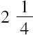
个法郎，这个数值即是保罗的预期收益．这是他应该提前付给那个已给他这个预期收益（机会）的人的金额；为了保持游戏公平，赌注应该等同于该游戏产生的预期收益．如果保罗因第一次投掷出正面而得2个法郎，因第二次投掷出正面而得5个法郎，不论他在第一次投掷时是否投出正面，第二次投掷出现正面的概率总是1/2，那么用1/2分别乘2个法郎和5个法郎，两个乘积之和为
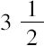
个法郎，这是保罗的预期收益，相应地也是他参加这个游戏的赌注．[7]原理九——在一系列的可能事件中，其中一些事件产生收益，而另一些事件则造成亏损．我们会如此来计算预期收益：每一有利事件的概率与它所产生的收益之积的和，减去每一不利事件的概率与与之相应的损失之积的和，如果第二个和比第一个和大，预期收益就变为亏损，并且希望就变为忧虑（即数学期望是负的）.
相应地，在生活中我们总是应该使一个期望的收益与它的概率之积至少等于与损失相应的类似的积．但是，为了达到这一点，就必须精确地估计收益、损失及其它们各自的概率．为此，一个非常精确的头脑、一个缜密的判断，以及处理事务的经验总是必不可少的；必须懂得怎样去引导自己而防止偏见、防止不切实际的恐惧与企望，防止大多数人聊以自慰的关于财富和幸福的错误观念．
上述原理在下列问题中的应用已经给予了几何学家们以极好的训练．保罗参与“猜正-反面”赌博游戏，条件是：如果第一次就掷出正面，他会得到两个法郎；如果只是在第二次掷出正面，那么他就得到四个法郎；如果只是在第三次掷出正面，那么他就得到八个法郎；以此类推，根据原理八，他参加的赌注应该等于投币的次数，因此，如果这个游戏无限次地进行下去，那么，赌注也应该是无限的．但是，没有一个理性之人愿意付出哪怕很少的赌注去参加这个游戏，例如5个法郎．那么由计算得到的结果与由常识所指示的结果的差异从何而来呢？不久我们就会认识到：它基于这样一个事实：人们对于收益的心理预期与收益并非成比例，并且它与成千上万个通常难以描述的环境因素有着千丝万缕的联系，而其中最一般和最重要的是与个人财富有关的因素．
的确，相对于百万富翁，对于只拥有100法郎的人来说，1法郎显然具有更大的价值．那么我们就应该从它的相对价值中区分出所期望收益的绝对价值．前者由渴望它的动机所决定，后者则与之毫无关系．不可能给出一个一般的法则来估计这个相对价值，不过，下面是丹尼尔．伯努利提出的一个原理，这个原理在许多情形下是行之有效的．
原理十——一个无穷小的和的相对价值等于它的绝对值除以所期待的总的收益，这就意味着每一个人都有一些或多或少的财产，其价值永远可以假设为非零．的确，即使一个人一无所有，其相对价值是劳动力与他所希望的至少能够满足其生存所需的一个值的比．
如果分析一下上面阐述的原理，我们可以得出以下原则：将某人的独立于其期望的那部分财富作为本元（unity），通过这些期望和它们的概率来测量这份财富可能的不同的值．那么，以这些值各自为底、以它们相应的概率为幂的积就是实际财富，对于此人来说，从这笔财富中获取的心理预期与此人从本元和期望中所得到的心理预期相等．从这个积中减去本元，差即是基于期望的实际财富的增加值．我们将这个增长值称为“道德期望”．容易看出，当与由期望所得到的变量相比，被作为本元的财富变成无穷大时，道德期望与数学期望是一致的．但是，当这些变量成为这个基本单位的可察觉到的一部分时，这两种期望彼此之间就会出现非常显著的差异．
这个法则所导出的结果与常识所显示的结果是一致的，通过这种方法，就可以以某种精确度估计出来这些结果．因此，在前述的问题中，可以看到：如果保罗的财富有200法郎，那么，他付出的赌注若超过9个法郎就是非理性的．更进一步，同一个法则表明，将风险分摊为所期望收益的几个部分，将会比把这个收益放置于一个相同风险的整体中会更好．这个法则也同样表明：即使在一个最公平的游戏中，损失通常总是大于收益．例如，假设一个赌徒有100法郎，他将其中50法郎押到“猜正-反面”的赌博中．赌博之后，他的财富将减少到87个法郎，也就是说，对于这个赌徒来讲，后面这个值所产生的心理预期利益等于他赌博之后的财富状况．因此，赌博是无益的，即使在赌注与所期望的数值与其概率的积相等的情况下也是如此．由此可以判断赌博是多么的不道德，在其中，所期望的和总是小于这个积．它们的存在只是由于错误的推演和由此所引起的贪婪：它诱惑人们为了一些不切实际的幻想而不顾自身的能力所及而倾其所有，它们是万恶之源．
表示每个人的实际财富的函数或许也代表了这个人的道德财富，不论这个函数是什么，（明白）赌博的危害、勿将所期望的全部收益置于相同风险之下的好处以及由常识所揭示的所有的相似结果仍然是有价值的．毫无疑问的是这个函数中的增量与具体财富中的增量之比会随着后者的增大而减小．
我们刚才在一些概率问题中阐释了原理的应用，这种应用需要一些方法，而对这些方法的研究导致了几种分析方法的产生，尤其是组合理论和有限差分运算的产生．
如果这样构造二项式的乘积：1加第一个字母，1加第二个字母，1加第三个字母，重复这样的过程，直到我们得到n个二项式，然后将它们乘在一起．[8]用这个乘积的展开式减去1，我们得到这样的一个和式，它是由下述的和相加得到的：从这n个字母中任取1个字母得到的所有组合的和，任取2个字母得到的所有组合的和，……，任取n个字母得到的所有组合的和；所有和中的所有项的系数都是1.为了得到从这n个字母中任取s个字母所得到的组合的数目，我们观察到如果我们假设这些字母彼此相同，那么前面所述的乘积就变为1加第一个字母得到的二项式的n次幂；因此，从n个字母中任取s个字母所得到的组合的数目就是这个二项式幂的展开式的第一个字母的s次幂的系数；这个数可以借助著名的二项式公式得到．[9]
值得注意的是在每个组合中字母的各自的情况，观察到如果将第二个字母和第一个字母组合，则它可以放在第一个位置或第二个位置，这样就得到两种组合．如果我们在这两个组合加入第三个字母，我们可以将其放在第一个，第二个和第三个位置，这样，对这两个组合中的任何一个，都可以得到三个新组合，共计六个组合．由此可以很容易地得出s个字母的排列的个数是从1到s的所有整数的乘积．为了考虑到这些字母各自的位置，有必要将该乘积与从n个字母中取s个字母得到的组合的数目相乘，该数等于略去了相应的二项式系数的分母．[10]
让我们想象一下由n个数字构成的一个抽奖游戏，每次抽取r个数．求一次取得s个给定的数的概率．为求得此概率，我们构造一个分数，其分母为所有可能情况的总数或从n个字母中任取r个字母得到的组合的总数，分子是所有包含给定的s个数的组合的总数，后面的数显然是从其他数中取n-s个数的组合数．这个分数即是所求概率，并且我们容易发现该分数可以简化为另一个分数，其分子为从r个数中一次抽取s个数的组合数，分母为从n个数中一次抽取s个数的组合数．[11]因此在法国彩票中，如果涉及的数字是90个，每次抽取5个，抽取一个给定数字的概率为
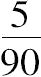
，化简后为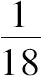
；因为这个游戏是公平的，那么，彩票发行方应该付给赌注的18倍．从90个数中一次抽取两个数的组合的总数为4005，而从5个数里选取两个数的组合的总数为10.取到给定的一对数字的概率为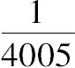
，彩票发行方应该付给赌注的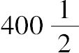
倍；相似地，对于抽取三个给定的数，应付赌注的11748倍，对于抽取四个给定的数字，他应付赌注的511038倍，对于抽取五个给定的数字，他应付赌注的43949268倍．彩票主办者远不会给予参与者这些收益预期．假设在一个瓮中有a个白球和b个黑球，从中抽取一个球之后再将其放回瓮中，求抽取n次取得m个白球和n-m个黑球的概率是多少．很清楚的是在每次抽取可能发生情况的数目为a+b.第二次抽取的每种情况可以和第一次的所有情况组合起来，两次抽取的所有可能情况的总数为二项式（a+b）的平方．在该平方式的展开式中，a的平方表示两次都取到白球的情况的总数，a与b积的两倍表示一次取到白球而一次取到黑球的情况的总数．最后，b的平方表示两次都取到黑球的情况的总数．重复这样的过程，我们看到，在一般情况下，（a+b）的n次幂表示在n次抽取中所有可能情况的总数；在该次幂的展开式中，a的次数为m的项表示抽取到m个白球和n-m个黑球的情况的总数．用该项除以二项式的n次幂，我们得到抽取到m个白球和n-m个黑球的概率．a与（a+b）的比是在抽取过程中取到一次白球的概率；b与（a+b）的比是取到一次黑球的概率；如果我们称这两个概率为p和q，在n次抽取中取到m个白球的概率是（p+q）n的展开式中p的次数为m的那一项．我们可以看到p+q等于1，该二项式的这个突出的性质在概率论中是非常有用的．但是，解决概率问题的最一般而直接的方法在于让它们由差分方程所决定．当我们根据他们各自的差异增加变量，对比表示概率的函数的逐个条件，要解决的问题经常提供各个条件之间的一个非常简单的比例．这个比例被称为常微分方程或偏微分方程；只涉及一个变量时称为常微分方程，涉及多个变量时称为偏微分方程．以下我们考察几个这样的例子．
假设三名水平相当的参与者在如下条件下一起玩游戏：前两名参与者中的胜出者同第三名参与者比赛，倘若前者胜出，则游戏结束；但是如果前者失败，则后者同另一位参与者比赛，这个过程一直持续到有一名参与者连续击败另外两人，此时游戏结束．求以任何给定的次数n游戏结束的概率．首先让我们精确地求出游戏结束于第n次比赛的概率．因为在此种情况下，赢者应该参加第n-1次比赛，并且赢得第n-1次和最后一次比赛．但是如果他没有赢得第n-1次比赛的话，也就是说他被对手击败，而他的对手又在前一次比赛中胜出，则此时游戏就会在这一场结束．因此，其中一位参与者进入第n-1次比赛并且赢得这次比赛的概率等于游戏恰好在这场比赛结束的概率；当这名参与者必须赢得下一场比赛，只有这样游戏才有可能在第n次结束，最后这种情况的概率只能是前述情况的概率的一半．这个概率显然是n的一个函数；那么，这个函数等于关于n-1的同一个函数的一半．这个等式就是被称为有限常微分方程（ordinary finite differential equation）的一种．[12]
借助这种方程，可以很容易地求出游戏在给定的次数结束的概率．显然游戏不会在第二次之前结束的；如果要使游戏在这一次结束，那么第一次中的胜者应该在第二次中战胜第三位参加者；游戏在这一次结束的概率为1/2.因此，通过前述的方程我们推出游戏在第三次结束的概率为
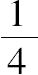
，第四次结束的概率为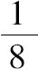
，以此类推；一般地，第n次结束的概率为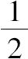
的n-1次幂．的所有这些次幂的和等于1减去这些幂中的最后一个；这就是游戏最晚在第n次结束的概率．[13]让我们再考虑第一个可以用概率解决的更加复杂的问题，而这个问题也是帕斯卡尔向费马提出请求的问题．两名参与者A和B水平相同，在如下条件下一起玩：最先比另外一个人多出一个给定的点数的人赢得该游戏，并且将所有赌注收入囊中；在经过若干次投掷后，两位参与者同意在游戏结束的情况下退出：我们要问的是赌注应该怎样分配．很明显，分配的两份应该与两人赢得赌局的概率成比例．于是问题被简化为确定这两个概率．它们显然依赖于每位参与者所得数字与要求数字所差的点数．因此，A的概率是两个我们称之为下标（indice）的两个数的函数．如果两位参与者同意再投一次（这个协定不会改变他们的状态，保证在这次投掷之后赌注的划分总是与赢得赌局的新的概率成比例），或者A赢得这一轮，那么他赢得赌局所需要的点数就减去1，要么B赢得这一轮，那么他赢得赌局所需要的点数就减去1.但是这两个情形的概率都是；所求的函数就等于这样一个函数的一半，其中，这个函数的第一个下标减1，再加上的同样一个函数的一半，其中的第二个下标减1.[14]这个方程就是一个所谓的偏差分方程．
通过这个方程，我们能够确定A的概率，可以从最小的数开始，可以看到，当A一个点也不缺时，A赢的概率或者表示这个概率的函数等于1，此时，第一个下标为0，当第二个下标为0时，这个函数就变为0.假设参与者A仅缺少一点，相应地根据B缺一点，二点，三点，等等，我们发现A赢的概率为，
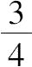
，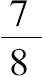
，等等．一般地，这个概率等于1减去的n次幂，n是B赢得赌局所缺的点数．然后，假设A缺少两个点，相应地根据B缺一点，二点，三点，等等，A赢的概率等于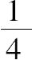
，，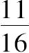
，等等．然后，再假设A缺三点，以此类推．这种通过差分方程获取一个量的相继值的方法是冗长而费力的．几何学家已经找到一些方法可以得到满足这个方程的带下标的一般函数，于是对任意特殊的例子，我们只需要在这个函数中代替对应的下标的值．我们用一般的方法来考虑这个问题．为此我们设想排列在一条水平线上的一系列项，它们中的每一项都可根据某一给定法则从前一项得出．假设这个法则可以由一个关于相继的几项和它们的下标或者说是表示它们在序列中的秩的数的方程给出．我将这个方程称为带一个下标的有限差分方程．该方程的阶（order）或者次数（degree）是这两个项的秩之差．利用这个方程，我们能够逐次地确定这个序列中的几项，并将该过程重复下去；但是，为了做到这一点，必须知道这个序列的几个项，所知项的个数等于方程的次数．这些项是序列的一般项的表达式或者差分方程的积分的表达式的任意常数项．
我们想象一下第二个项序列的图式，其中的每一项都在第一个序列的项的下面，并按水平方向排列．再想象一个位于第二个序列的项下面的第三个水平排列的序列，就这样无限地进行下去；我们假设所有这些序列的项由一个一般的方程联系起来，这是关于几个相继的项，相继的是指在水平方向和垂直方向的意义上，和在两个方向意义上表示其秩的数之间的方程．称这个方程为有两个下标的有限偏差分方程．
我们以同样的方式想象一下位于前述序列的图式之下的相似序列的第二个图式，其中的项都被放置在第一个图式的项的下面；再想象一个位于第二个图式下面的第三个类似序列的图式，就这样无限地进行下去；我们假设这些序列的所有项由一个方程联系起来，这是关于在长度、宽度、深度意义上几个相继的项和在这三种意义上表示它们秩的数之间的方程．称这个方程为有三个下标的有限偏差分方程．
最后以一种抽象的方式且不依赖于空间的维数来考虑这个问题．一般地，让我们想象一个由若干个量组成的体系，这些量是一定个数的下标的函数．我们假设关于这些量、这些量与这些下标之间的差、与这些下标本身之间，有着与这些量的个数一样多的方程．将这些方程称为给定下标数的偏有限差分方程．[15]
利用这些方程，我们能够逐次地确定这些量．但是，就像含有单一下标方程，我们必须知道该序列的若干个项，以同样的方式，因此含两个下标的方程需要我们知道一行或几行序列，这些序列的通项可以由其中之一下标的任意一个函数表达出来．类似地，含三个下标的方程需要我们知道一个或几个序列图式，其中每一个通项都可以由任意一个具有两个下标的函数表达出来，以此类推．在所有这些情况下，通过逐次消去我们能够求出这些序列的某个项．但是，因为如此消去法所用到的所有方程都包含在方程的相同图式中，我们取得相继项的所有表达式应该被包含在一个一般表达式中，这是一个决定该项的位置的下标的函数．这个表达式上述提到的差分方程的积分，积分演算的目的就是求出这个表达式．
泰勒（Taylor）在其题为《增量法》（Metodus incrementorum）的著作中首先研究了线性有限差分方程组．在这里，他展示了怎样求含有一个系数且最后一项是一个下标的函数的一阶方程的积分．事实上，通常考虑的等差数列和等比数列的项的关系是线性差分方程的最简单的情形；但是人们从未以这种角度去研究它们．正是这些将它们与一般的理论联系起来的研究之一，引发了这些理论的产生，并成为一些名副其实的发现．
大约在同时，棣莫弗（de Moivre Abraham）凭借循环级数研究任意阶的常系数有限差分方程．他以一种别出心裁的方法成功地求出了它们的积分．在此追溯一下发明者的足迹是非常有趣的．把棣莫弗的方法应用于一个循环级数，其中已给出三个相继项的关系，通过这种方式，我将拓展他的方法．首先，他考虑等比数列的相邻的一些项的关系或者表示其两个项的方程．他将这种关系中的每一项的下标减去1，将之乘以一个常数因子并减去从第一个方程得到的乘积．因此得到关于等比级数连续三项的方程．棣莫弗随后考虑第二个数列，其各项之比是他已经用过的相同的因数．类似地，他将这个新的级数方程的项的下标减去1.在这种情况下把它乘以第一个数列的公比，从第二个数列的方程中减去这个积，由此发现这个（第二个）数列的三个相继项的关系完全类似于在第一个数列中发现的．随后他注意到如果将两个级数逐项相加，在这个和（级数）的任意给定的三个相继项之间存在相同的比例关系．为了求出两个等比数列的公比，他将这个比的系数同前述递归级数的那些项的比例关系的系数进行比较，他发现一个二次方程的根就是这些比．由此，棣莫弗就将递归级数分解为两个等比数列，每一个都乘以一个任意常数，棣莫弗通过递归级数的前两项确定这个常数．实际上，达朗贝尔也用这个匠心独具的过程来求常系数的无穷小线性差分方程的积分，拉格朗日已将之转化为相似的有限差分方程．
最后，我考查了线性偏有限差分方程，首先用的是循环级数（recurrorecurrent series）的名称，然后再用它们各自的名称．对我来说，求所有这种方程积分的最一般、最简单的方法是建立在对生成函数的思考上的，其一般思想如下所述．
如果我们构造一个关于变量t的函数V，并按照该变量的幂而展开，每个幂的系数都是这个幂的指数或者下标（exponent or index）的函数，我将这个指数称为x.我将V称作这个系数或下标的函数的生成函数．
现在，如果将V的展开式的级数乘以一个同样以t为自变量的函数，例如1加上该变量的两倍，这样的乘积则是一个新的生成函数，其中变量t的x次幂的系数等于V中相同次幂的系数加上t的x-1次幂的系数的两倍．[16]因此，乘积中下标x的函数等于V中下标x的函数加上下标减1的相同函数的两倍．下标x的函数因此是V的展开式中相同下标的函数的导数，这个导数函数我称之为这个下标的原函数．我们通过将字母放在原函数之前来表示导函数．由这个字母表示的导函数依赖于V的乘数，我们用T来表示，并假设T和V一样，以变量t的幂而展开．如果我们将T乘以V和T的乘积，这就等于将V乘以，我们构造第三个生成函数，其中，t的x次幂的系数是一个类似于前一个乘积的相应系数的导数；也可以通过将同样的字母置于前述的导数之前来表示它，这样x的原函数之前要写两次．但是为了代替这种两次书写，我们赋予它一个指数2.
继续这样的过程，我们看到，在一般的情形下，如果我们用V乘以T的n次幂，我们通过将字母的n次幂放在原函数前面而得到V和T的n次幂的乘积中t的x次幂的系数．
例如，我们假设T是t的倒数；则在V和T的乘积中，t的x次幂的系数等于V中t的x+1次幂的系数；V和T的n次幂的乘积中的（t的x次幂的）系数就是原函数，其中x增加了n个1.
我们现在考察t的一个新函数Z，与V和T一样，以t的次幂展开它；我们通过将符号放在原函数之前来表示V和Z的乘积中的t的x次幂的系数；x的原函数前加上的n次方表示V和Z的n次幂的乘积中的系数．
例如，如果Z等于
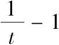
，在V和Z的乘积中，t的x次幂的系数是V中t的x+1次幂的系数减去x次幂的系数．这就是下标x的原函数的有限差分．符号指原函数的有限差分，在这种情形中下标以单位变化；放置于原函数之前的这个符号的n次幂指这个函数的第n阶有限差分．如果我们假设T等于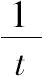
，就有T等于二项式Z+1.V和T的n次幂的乘积就会等于V和二项式Z+1的n次方的乘积．按照Z的幂展开这个式，那么V和这个展开式的多项的乘积是这些相同项的生成函数，在这些项中，我们用下标的原函数对应的有限差分替换Z的次幂．现在V和T的n次方的乘积是原函数，其中下标x增加n个1；再经过判别式到它们的系数，我们将使得这个增加的原函数等于二项式Z+1的n次方的展开式，只要在这个展开式中用原函数相应的差分去替换Z的各次幂，并且将这些次幂的独立的项和原函数相乘．我们将因此得到原函数，其中下标以它的差分为单位增加任意给定的数n.
假设T和Z总有上述的值，并且使Z等于二项式T-1，那么，V和Z的n次幂的乘积等于V和二项式T-1的n次幂的展开式的乘积．如上已实施的，再经过从生成函数到它们的系数，就会得到以二项式T-1的n次幂的展开式的原函数的n阶差分，其中我们以同样的函数替代T的次幂，这个函数的下标要加上幂的指数，我们也以原函数替换独立于t的项——这个项就是1，由此通过这个函数的相邻的项就得到了这个差分．
置于原函数前的δ将那个函数转换为V和T的乘积中的t的x次幂的系数（这个函数的导数）；Δ表示V和Z的乘积中同样的导数，通过前述的讨论，我们导出这样一个一般的结果：无论T和Z所代表的变量t的函数是什么，在利用这些函数能够形成的所有恒等式的展开式中，可以用符号δ和Δ代替T和Z，只要在序列中下标的原函数可以写在幂和这些符号的幂之乘积之后，并且将这些符号的一些独立的项乘以这个函数．
借助这个一般结论，我们能够去将下标x的原函数一个差分的任意次幂，其中x以1为单位变化，转化为相同函数的一系列差分，其中x以确定的单位数变化，反之亦然．假设T是
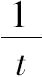
的i次幂减1，Z恒等于减1；于是V与T的乘积中的t的x次幂的系数是V中t的x+i次幂的系数减去t的x次幂的系数；那么，它是下标x的原函数的有限差分，其中下标以数i为单位变化（即x被x+i替代）.很容易看到T等于二项式Z+1的i次幂与1的差．T的n次幂等于这个差的n次幂．如果在这个等式中我们将T和Z各自替换成符号δ和Δ，在展开式后面，我们在每一项后面写出下标x的原函数，那么我们可以使这个函数的n阶差分，其中x以数i为单位变化，被相同函数的一系列差分表示出来，在其中x以数1为单位变化．这个序列只是它所表示的差分的变换，这个差分与它相等；但是，分析的力量正是蕴涵于这样的一些变换之中．分析的一般性允许我们假设在这个表达式中n是负的．那么δ和Δ的负数次幂表示积分．事实上，原函数的n阶差分的生成函数是V和
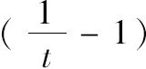
的n次幂的乘积，作为差分的n次积分的原函数具有相同差分的生成函数，这个原函数是的n次幂乘以符号Δ的相同次幂；这个幂表示相同阶数的积分，下标x以数i为变化单位；δ的负次幂表示相等的积分，其中下标x以数i为变化单位．在这里以一种最简单和最清晰的方式显示出了正的次幂和差分之间、负的次幂和积分之间的分析推理．如果将δ置于原函数之前而得到的函数等于0，我们将得到一个有限差分的方程，V是它的积分的生成函数．为了求出这个生成函数，注意在V和T的乘积中，应该消去t的所有次幂，除了那些小于差分方程的阶数的次幂；V等于一个分数，其分母为T，其分子为一个多项式，在这个多项式中t的最高次幂比差分方程的阶小1.T的各个次幂的任意系数，包括常项，由下标的原函数的对应个数的一些值所决定，其中，相继令x等于0，1，2，等等．当给定差分方程时，可以这样求出T：将差分方程的所有项放在最前面，用1替换具有最大下标的原函数，用t取代这个下标减1的原函数，用t2替换这个下标减2的原函数，以此类推．[17]在V的前面的表达式的展开式中，T的x次幂的系数是x的原函数或者有限差分方程的积分．分析学为此提供了多种方法，在其中我们可以选择最适合研究对象的一种，这是积分方法的先进性．
设想V是关于两个变量t和t'的函数，以这些变量的幂及其乘积的形式而展开；t的x次幂和t'的x'次幂的乘积
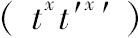
的系数是这些幂的指数或下标x和x'的一个函数；我称这个函数为原函数，V是这个函数的生成函数．我们将V和变量t和t'的函数T相乘，T以这些变量的幂和乘积的形式而展开；乘积是原函数的导函数的生成函数；例如，如果T等于t加上变量t'减2，这个导数将由一个原函数而给出，这个原函数的下标x被替换为x-1，加上这个x'被替换为x'-1的原函数，再减去原来原函数的两倍．对于任意的T，我们用一个置于原函数之前的符号δ表示它，它是一个导函数，那么，V和T的n次方的乘积，是原函数的导函数的生成函数，就是在它前面写出符号δ的n次方．因此这些定理类似于有关一个变量的函数的定理．
假设符号δ所指示的函数为0；那么就可以得到偏差分方程．例如，如果我们像前面一样，令T等于变量t加变量t'-2，那么，这三项的和就等于0：把下标x换为x-1的原函数，把x'换为x'-1的原函数，减去原函数的两倍．那么，原函数或者这个方程的积分的生成函数V必须使它与T的乘积不包括t和t'的所有乘积；但是V可能单独地包括t和t'的次幂，也就是说，t的任意一个函数和t'的任意一个函数；V是一个分数，其分子为这两个任意函数的和，其分母为T.在这个分数的展开式中，t的x次幂和t'的x'次幂的乘积的系数是前述偏差分方程的积分．在我看来，这一类方程的此种积分方法似乎是最简单和最容易的，可以将之应用于有理分数展开的多种分析过程之中．
如果不借助微积分就很难理解这个题材更加丰富的细微之处．
将无穷小偏差分方程看作有限偏差分方程，其中没有忽略任何因素，我们能够阐明其演算的模糊之处，这些模糊之处一直是几何学家们重点讨论的课题．以这种方式，我已经表明将不连续的函数引入它们的积分之中是可能的，只要不连续的情况只出现在与这些方程的阶相同或者更高阶的微分中．像一切思维的抽象一样，微积分的超越之处就是一般的符号，其真实的意义只有通过对导致其基本思想的形而上学进行分析才能被人理解；这一点通常是很困难的，因为相对于故步自封，人类的心智仍然较少尝试使自己探索未来．类似地，无穷小差分和有限差分的比较能够清楚地显示出无穷小微积分的形而上学．
很容易证明，如果一个函数的n阶有限差分是被E的n次方所除，其中E是变量的增量，这个商以E的次幂而展开为一个级数，那么它的第一项是独立于E的．随着E的减少，这个级数也越来越趋近第一项，所以，只是从小于任何指定的数的量这个方面来说，这个级数不同于第一项．这个项（第一项）是级数的极限，在微分学中它表示函数的无穷小n阶差分被无穷小增量的n次方所除．
从这个观点来考虑无穷小差分，我们看到微分学的多种运算接近于分别比较等价的表达式的展开式中的有限项或者独立于变量增量的那些项，这些增量被当作是无穷小的．这个程序是非常精确的，因为这些增量是不确定的．因此微分学具有其他代数运算的所有精确性．
同样的精确性也体现在微分学在几何学和力学的应用之中．如果我们想象一条曲线与一条割线相交于两个相邻的点，将这两个点的纵坐标间的距离称为E，E是第一个交点到第二个交点的横坐标的增量．很容易看到，纵坐标相应的增量是E与第一个纵坐标相乘再除以subsecant[18]；在这个方程中，若第一个纵坐标增加其增量，相应地就会得到与第二个纵坐标相关的方程．这两个方程的差是第三个方程，以E的次幂展开它并除以E，则得到的第一个项是独立于E的，这一项就是这个展开式的极限．[19]如果这个项等于0，就会得到次割线的极限，这个极限显然就是次切线．
这种令人赏心悦目、独具匠心的获取次切线的方法归功于费马，他已将这种方法推广到超越曲线．这位伟大的几何学家用字母E表示横坐标的增量，并且只考虑这个增量的一次幂，就像我们借助微分学所做的那样，他精确地求出了曲线的次切线、拐点、纵坐标的极大值和极小值、一般情况下的一些有理函数．我们也借由他在《笛卡尔通信集》中关于光折射问题的漂亮解法了解他是如何将他的方法推广到无理函数的，将它们从根和幂只局限于有理数的状态中解放出来．费马应被视为微分学的真正发现者．此后，牛顿在他的《流数法》中使这种计算更加分析化，并通过优美的二项式定理将这些程序简单化和一般化．几乎与此同时，莱布尼兹的工作最终丰富了微分学：他引入一种能够表述从有限到无穷小的过程的符号，并将此计算的一般结果的表达优势与给出微分和这些量的和的第一个近似值结合起来．这套符号非常适合于偏微分的计算．
我们常常导出一些含有众多的项和因数的表达式，其中数的替换是无法实行的．当我们考虑大量事件时，这种情况会出现在概率问题中．与此同时，当事件变得更加众多时，为了求出结果的概率，就必须掌握公式的数值．特别是必须持有一个定律，根据这个定律概率不断地趋近确定性，如果事件的数量趋向无限，最终将达到这个确定性．为了得到这个定律，通过对包含大量的项和因数的公式进行积分，我考虑了差分的定积分与因数的大数次幂相乘所产生的东西．这一点启发了我的一种想法：将分析复杂的表达式和差分方程的积分转化为简单的积分．通过同时给出在积分符号下的函数以及积分的极限这一方法，我满足了这个条件．值得注意的是函数正是前述方程和表达式两者的生成函数；这使得这个方法与生成函数的理论联系起来，它因此成为生成函数理论的补充．更进一步，这只是个将有限积分化归到一个收敛级数的问题．通过一个程序我已经做到了这一点，凭借这个程序，表示级数的公式越复杂，级数收敛的速度就越快．所以，这个程序越是必需的，就越要精确．经常地这个级数将周长与直径之比的平方根[20]作为一个因数；有时它也依赖其他的超越数，这些超越数的个数有无限多．
一个重要的论点涉及分析的非凡的一般性，并允许我们将这个方法扩展到频繁地出现于概率论中的公式和差分方程之中，这个论点就是通过假设定积分的上下限是正的实数，但是也会出现由方程解出的那些上下限只有负根和虚数的情况．更进一步，这些从正数到负数、从实数到虚数的变换，也就是我首次用到的变换，使我能够求得许多奇异定积分的值，稍后，我会直截了当地演示这一点．所以，我们可以再考虑作为一种类似于归纳和类比的发现方法，这些方法长期被几何学家们所采用——起先小心谨慎，然后充满信心，因为有大量的实例已经证明了（最初的论点）.与此同时，通常必须直接通过演绎论证来证明这些经过摸索手段而获得的结果．
我已经将前述的方法总体命名为“生成函数的演算”，这种演算可以作为本人已出版的《概率的分析理论》中所述工作的基础．它关系到一个量与自己重复相乘或一个量的正次幂和负次幂的表示法的简单思想，这就是把表示幂的数写在字母的顶部，这些数也代表了这些幂的次数．
笛卡尔在他的《几何学》中已用过这种符号，自从这部重要的著作出版之后，这种符号被广泛采用．不过，与变量函数与曲线的理论相比，符号（的应用）真是小事一桩了，借助于这个理论，伟大的几何学家建立了现代微积分的基础．然而，分析的语言，或许是所有语言中最完美的，本质上是发现的有力工具，尤其当这些符号是必要的和愉快的构造时，它们就成为如此众多的新运算的胚芽，这一点在上述的例子中得到充分的显示．
沃利斯（Wallis）是对分析学的进展作出过最大贡献的数学家之一，在其题为《无穷小算术》的著作中，他本人的兴趣尤其在于遵循归纳和类比的思想思考下述问题：如果以二、三等等，去除一个字母的指数，当这种相除是可能之时，根据笛卡尔符号法则，商就是以该字母为底被除数为指数的这个幂的二次、三次方根．根据类比法，将这个结果推广到不能相除的情形中，他把一个以指数为分数的量看作某个方根，这个方根的次数为该分数的分母，方根下面的是以该字母为底、以分数的分子为指数的形式．[21]接着他指出，根据笛卡尔符号法则，以相同字母为底的两个数相乘等于它们的指数相加，以相同字母为底的两个数相除等于被除数的指数减去除数的指数（当被除数的指数大于除数的指数时）.沃利斯将这一结果推广到当被除数的指数等于或小于除数的指数时的情况，这使得指数的差为零或负数．然后，他提出负指数表示同底的指数幂（正的）的倒数．[22]这些方法使他求出了一般意义上的单项微分的积分，由此，他推出了其指数是正整数的一类特殊的二项式微分的定积分．其后，由于沃利斯注意到表示这些积分的数的规律，这是一系列的插值和美妙的归纳，在其中，可以发现定积分计算的萌芽，定积分的计算给予几何学家们以极大的训练，也是我的“新概率理论”的基础之一．他发现圆的面积与圆直径的平方之比可以表示为一个无限的乘积．随着越来越多的项被包含在内，这个比也就越来越收敛于一个极限．这是分析学中最奇妙的结果之一．然而，值得注意的是，沃利斯如此细微地思考了根幂的分数指数，他本应该注意到这些幂在他之前就已经有人做过了．如果我没有记错的话，牛顿在致奥登柏格的信中最先应用了幂的分数指数的符号．沃利斯充分利用了归纳法，他将二项式幂的指数与展开式的项的系数进行比较，在这种情况下，指数是正整数，由此，他得出了这些系数的定律，并用类比法将这个定律推广到分数和负数幂．这些基于笛卡尔符号法则的多种结果展现了他对分析学发展的影响，迄今为止，它（笛卡尔符号法则）在给出最简单、最清晰的对数思想方面仍具有优势，对数实际上只是一个量的指数，随着无穷小次数的增加，其连续的幂能够表示所有的数．[23]
但是，这个符号法则所取得的最重要的扩展是可变化的指数，构成了指数的演算，这是现代分析中最富有成果的分支之一．莱布尼茨是第一个通过变量指数说明超越数的人，从而他已经完善了组成一个有限的函数的元素体系；对每一个一元有限显函数，都可以划归为对于一些简单的量的最终分析，将它们用加、减、乘、除的方法进行组合，从而得到一些恒定或者变化的幂．这些元素形成的方程的根是变量的隐函数．因此，在一个其双曲对数是1的数幂的数列中，如果一个变量可以表示为等于它的幂的指数的对数，那么，它的一个变量的对数就是一个隐函数．
莱布尼茨想给他的微分符号以同样的指数，就像给予那些量那样；但另一方面，他不是用同样量的重复乘积来表示这些指数，而是用相同函数的重复微分来表示这些指数．这种笛卡尔符号的新的扩展促使莱布尼茨在正幂与微分之间、负幂与积分之间进行类比．拉格朗日在对这个题材的发展中沿用了这种奇异的类比；并通过一系列的归纳，这被认为是归纳法所做的最漂亮的应用之一，他得到了一些一般的公式，在微分和积分的相互转换中，当变量具有多种有限增量，以及当这些增量是无穷小的时候，这些公式的奇特性就像它们的有效性一样．但是他没有给出证明，这对他而言是很困难的．生成函数理论将笛卡尔符号体系拓展到一些字母中；它清楚地演示了幂和由这些符号所表示的运算之间的类比；因此它可以被认为是符号的指数的运算．所有有关级数和差分方程的积分问题都极易将它们的起源追溯于此处．
概率论最初的研究主题起源于赌博游戏中的组合．这种组合的种类不计其数，其中许多易于将其化为演算，其他则需要更加复杂的演算，这些困难性会随着组合变得更加复杂而增加，克服这些困难的好奇心与愿望激励了几何学家们不断地改进这种分析．我们已经看到彩票的收益可以简单地由组合理论求出来．但是，更加困难是对于一个能够以赢输为1对1的可能性打赌的人来说要了解必须抽取的次数，例如，所有的数将被抽取到，n是这些数的个数，r是每次所抽取的数的个数，而i是未知的抽取次数．那么，所有数将被抽到的概率的表达式取决于r个相继数的乘积的i次幂的n次有限差分．当n非常大时，要想求出使得这个概率等于1/2的i的值就变得不可能了，除非这个差分可以转化为一个迅速收敛的级数．可以通过下面表述的大数次（观察次数）的函数的近似的方法做到这一点．因此可以看到，因为在由一万个数组成的彩票中，每次从中抽取一个，在赢输为1对1的打赌中在95767次抽取中取到所有的数是不利的；对于96768次抽取，同样的打赌就是有利的．在法国彩票中，这种打赌对于85次抽取是不利的，而对于86次抽取就是有利的．
让我们再次考虑一下有两个参与者的情况，A、B两人以这种方式共同赌“猜正-反面”游戏：每次投掷，如果正面朝上，A给B一个硬币，反之，B就付给A一个硬币；B的硬币数是有限的，而A的是无限的，只有当B的硬币用光时游戏才能终止．那么我们要问的是：在赢输为1对1打赌的情况下，应该赌游戏结束所需要投掷的次数是多少．如果B有大量的筹码，那么游戏在i次投掷结束的概率的表达式是由包含大量的项与因子的一个数列所给定的．如果不能将这个级数化为一个迅速收敛的级数，找到使得这个级数等于1/2的未知i的值是不可能的．在将刚才讨论过的方法应用于该问题的过程中，我们发现关于这个未知量的一个非常简单的表达式，从中可以导出，例如，B有100个筹码，它就比1对1赌游戏将在23780次投掷结束的赌注要小一点，比将在23781次投掷结束的赌注要大一点．
这两个例子，再加上我们已经给出那些，已经足可以说明赌博游戏问题是如何成为完美分析的一部分的．
这种不均等对于计算的结果具有显著的影响，这种影响应引起人们给予特别的关注．让我们考虑一下“猜正-反面”的赌博游戏，假设非常容易均等地掷出硬币的一面或者另一面．那么，第一次投掷正面朝上的概率为1/2，相继两次抛掷得到正面的概率就是1/4.但是，如果硬币是不均匀的，这种不均匀会导致其中一面比另一面易于出现，但是，如果我们并不知晓由这种不均衡（偏向性）所导致的哪一面更易于出现，第一次投掷得到正面的概率仍然是1/2，由于我们对于这种不均衡所倾向的那一面一无所知，如果这种不均衡倾向于它，简单事件的概率就会随之增加，同样，如果这种不均衡与之相反，（简单事件的概率）就会随之减小．但是，即使处于这样的无知状态中，相继两次得到正面的概率也是增加的．的确，这个概率等于第一次投掷得到正面的概率乘以在第一次投掷得到正面的情况下第二次投掷仍然得到正面的概率，然而，第一次投掷所发生的（正面结果）有理由使人们相信硬币的不均衡倾向于它，那么，未知的不均衡性增加了第二次投掷得到正面的概率，相应地，也就使这两个概率的乘积增加了．为了将这种状况化为演算，让我们假设这种不均衡性使得它所倾向的简单事件的概率增加了二十分之一．如果这个事件为正面朝上，那么，它的概率就是1/2加1/20，或者说11/20，相继两次投掷得到正面的概率为11/20的平方，即121/400.如果它所倾向的是反面朝上，那么出现正面的概率就是1/2减1/20，即9/20，那么连续两次投掷得到正面的概率为81/400.由于我们并没有理由预先确信这种不等性倾向于事件中的一个而非其它，显然，就必须将前述的两个概率相加，再取这个和的一半，就得到复合事件（正面，正面）的概率，这个概率为101/400，它比1/4大1/400，即增量1/20的平方，这是不均衡性使得其有利于其发生的事件的可能性增加的量．相似地，得到（反面，反面）的概率是101/400，而得到（正面，反面）或者（反面，正面）的概率各为99/400，这四个概率的和应该等于确定性或者1.一般来说，由此我们发现有利于一些简单事件的恒定且未知的原因通常会使同一简单事件重复发生的概率增大，这些原因被断定为等可能的．
在偶数次的投掷中，正面反面两者必定都出现，或者出现偶数次或者出现奇数次，如果出现两个面的可能性是相同的，这些情形中的每一个的概率都是1/2；但是，如果它们之间存在着一个未知的不均衡性，这种不均衡性通常有利于第一种情形．
两个人在如下条件下参加赌博，假设他们的（赌博）技能相同：每次投掷输掉的一人送给对手一个筹码，游戏继续直到其中一位参与者再没有筹码为止．概率的演算向我们表明：由于这个游戏是公平的，参与者的赌注应该与他们的筹码数目成反比，然而，如果在参与者之间存在着一个未被察觉的不均衡，这种不均衡性就会有利于具有最少筹码的那一位赌徒．如果同意将他们的筹码翻倍或者增加三倍，在他们的筹码数趋向无穷的情况下，这个概率会变为1/2，或者说与另一位赌徒的（赢）概率相同，总是保持相等的比例．
可以通过以下方法对这些不为人所察觉的不均衡性的影响进行修正：使它们本身由随机性而产生．如此，在“猜正-反面”的赌博中，如果还有第二枚硬币，每次抛掷第一枚的同时也抛掷第二枚，并且通常人们约定把第二枚向上的一面称为正面．那么，与只抛掷一枚硬币的情况下相比，连续抛掷第一枚与第二枚硬币出现正面的概率是将更加接近于1/4.在前面的情况下，差是未知的不均衡性给予其有利于第一枚硬币的那一面的可能性的微小增量的平方，在其他情况下，这个差是这个平方与和第二枚硬币相应的量的平方之积的四倍．
假设将数1至100按照它们的自然顺序放置在一个瓮中，摇晃该瓮使它们混合，然后，从中抽取一数，显然如果混合是充分的，那么取到每一个数的概率是相等的，但是，如果基于把这些数放入瓮中的顺序令我们担心它们之间有一些微小的差别，那么可以将这些数字以从第一个瓮中取出，依次有序地放入第二个瓮中，然后摇晃第二个瓮使它们混合，那么这个偏差将会大大地减小．第三个瓮，第四个瓮，等等，如此将会把第二个瓮中的那些差别减小得越来越微不足道．
我们往往将那些变化的和未知的原因冠以偶然性之名，偶然性使得事件的进程充满了不确定性和无规则性，然而，我们看到，随着这些事件发生次数的增加，令人惊异的规则性就会显现出来，这种规则性似乎是遵循着一种设计，这一直被当作是神圣设计的一种证明．但是，如果我们仔细思考这个问题，不久就会认识到这种规则性只是具有各自可能性的一些简单事件的自然过程而已，这些事件越是可能的，他们就应该越倾向于经常地发生．让我们想象一下，比如，一个包含白球和黑球的瓮，假设每次抽取一个球，把它放回后再进行下一次新的抽取．在最初几次抽取中，抽取到白球的数目与抽取到的黑球数目之比是最缺乏规则的；但是这种不规则性的变化不定的原因却对事件的规则进程轮番产生有利或不利的效果，在大量的抽取总和中它们彼此抵消，这就使得我们能够得到越来越好的瓮中所含有的白球和黑球之比的估计值，或者说越来越好地得到每次抽取一个白球或者一个黑球的各自可能性的估计值．从这些结果中可以导出以下定理：
抽取的白球数与抽取球的总数之比与瓮中所含有的白球与所有的球数之比的差不会超出一个给定的区间，这种情况的概率，无论这个区间有多小，会随着事件数目的增加而趋向于确定性（即概率为1）.
这个由常识所表明的定理难以给出分析学的证明．因此，杰出的几何学家雅克比．伯努利最先拥有了这个定理的思想，并给出了自己的证明，他尤其强调了这个证明的重要性．将生成函数的演算应用于这种情况，不仅给出关于这个定理的一个简单证明，而且更进一步，它给出了观察到的事件之比只是在一定的极限范围内不同于它们各自的可能性之比的概率．
从上述定理中可以导出这样一个结果，可以将这个结果当作一个定律，即：当大量地考察自然的行为时，这些行为（的发生次数）之比就非常接近于一个恒定的值．因此，尽管有年年之间的波动，但是，如果经过一个相当漫长的年岁，收成的总量实际上是相同的．所以，利用简便的预见，借用一个涵盖并不均匀分布的所有季节的收成这种方式，人就能够防止自己不受季节变化的影响．我并不期望从上面的定理中推出道德的原因．每年的出生数与总人口之比，以及结婚的人数与出生数之比却只有微小的变化；年出生数几乎是相同的，据说，在巴黎，邮局在一般的季节中因为写错或没有给出地址等原因而不能投寄的信的数目也几乎没有变化，人们在伦敦似乎也注意到了这种情况．
从这个定理中可进一步推出下面的结果：在一个无限延展的事件序列中，规则和恒定原因的影响从长远来看终究会压倒不规则原因的影响．正是这一点使得彩票的收益就像农业的收成一样确定，因为他们（发行方）本身所专享的机遇保证了他们在大量的投掷中具有总体上的优势．因此，大量的、有利的机遇既然总是伴随着一些建立和维持社会秩序的理性、正义和人性的永恒法则，那么遵从这些法则就会受益匪浅，而无视它们则危害极大．如果一个人借鉴一下历史和他本人的经历，那么，他就会看到所有的事实都会对这个演算的结果给予支持．试想一下，那些建立在人类的理性和自然权利之上的制度的幸福成果，在那些懂得如何去坚持和维护这些成果的民族中，再想一想，美好的信仰为那些将之作为其管理的基石的政府所带来的好处，这些政府由于一丝不苟地恪守他们的义务和承诺而付出了代价，为此他们是如何获得了补偿的！在国内具有多么大的感召力！在国外又具有何等的威望！相反，看一看那些由于其领导人的野心和背信弃义而陷入深渊的不幸民族吧！每一次由于对征服的贪婪而陷入狂热的强国渴望着统治世界，而在那些被威胁的国家中，对独立的渴望就（促使它们）形成一个联盟，而这个强国通常总是成为这个联盟的牺牲品．相似地，在那些导致各种国家的大小增加或者减少的变化无常的原因中，就像恒定的原因一样在起作用，自然的边界最终会被接受．那么，对于帝国的稳定和幸福两方面而言，重要的不是将这些边界扩展到由这些原因的作用而被不断地恢复到的边界之外——这就像由疾风暴雨所推高的海潮由于万有引力的作用再回落到其盆地．这是概率演算的另外一个结果，它得到了多起灾难性经历的验证．如果从恒定原因的影响这一着眼点来思考历史，它将给予人类最有益的经验教训的东西与由好奇心所引起的兴趣联系在一起．有时，我们会将必然发生的这些原因的结果归咎于发生其作用的偶然的环境．例如，当两个民族被一片浩瀚的海洋或者一段遥远的距离所隔离时，一个民族总是被另一个民族所统治就是违背事物的本性的．可以断定的是，从长远来看这个恒定的原因不断地与变化的原因交汇在一起，这些变化的原因以同样的方式起作用并且随着时间的进程而显示出来，也可以断定，它将以以下方式而告终：通过发现其自身足够强大到给予一个被征服民族以其天赋的独立性，或者将它与一个强大的邻国联合起来．
在大量的事例中，对风险的分析是最重要的，简单事件的可能性是未知的，我们被迫从过去的事件中去搜寻线索，这些线索能够在对于引发它们的原因的猜测中引导我们．上述的法则是关于由所观察的事件推出原因的概率的法则，在将生成函数的分析理论应用于这个法则时，就可以推出以下的定理：
当一个简单事件或者由几个简单事件组合而成的一个复合事件，比如像赌博游戏这样的事件，已被大量地重复多次，使观察的概率最大化的简单事件，就是观察所显示出的最可能的东西，观察到的事件重复发生的次数越多，这个可能性就变得越大，如果重复的次数趋向于无穷，它就趋近于1.
在此可以发现两种近似值：一个是关于给出过去发生事件的最大概率的极限；另一个近似值是关于这些可能性落入这些极限之间的概率．如果这些极限是相同的，那么这个复合事件的重复发生会使得这个概率越来越大．如果这个概率保持相同，那么事件的重复发生会使得这些极限间的区间越来越窄．最终，这个区间变为零，这个概率变为确定性．
如果把这个定理应用于在欧洲的不同国家中观察男女婴出生数之比，就会发现在各个地区这个比都等于22比21，它表明更有可能生出男孩的事件具有极大的概率．进一步思考一下，在拿波里和圣彼得堡也有相同的情况，由此可见气候的作用没有影响．与一般流行的观念相反，我们猜想，男性出生的优势甚至在亚洲也存在．于是，我已邀请被派往埃及的法国学者着手调查这个有趣的问题，但是，很难获取精确的出生信息，这一点妨碍了他们对这个问题的解决．幸运的是，洪堡先生（M.de Humbold）在美洲以非凡的睿智、毅力和勇气观察和收集了无数新鲜的事物，其中他并没有忽视这个问题．他发现，在热带地区这个出生比与在巴黎观察到的比是相同的．这一点使我们认识到男性出生数较多是人类的一个一般规律．在我看来，不同种类的动物在这一点上所遵循的规律应当引起博物学家们的关注．
男婴出生数与女婴出生数之比与1相差无几，即使是在一个地区对出生进行大量的观察也是如此，这个事实在这方面向人们提供了一个与一般规律相反的结果，如果没有这个规律，人们或许就会得出结论说这个规律并不存在．为了得到这样一个结果，必须利用大量的数据并且要设法确保它以大概率被显示出来．例如，布丰在其《政治算术》中引用了勃艮第（Bourgogne）几个教区的例子，在这些地区，女婴的出生数超过了男婴，在这些教区中，在Carcelle-le-Grignon教区五年中有2009个婴儿出生，其中1026个女婴，983个男婴．尽管这些数据是相当大的，但是，它们却表明，更可能生女孩（的情况）只具有9/10的概率，并且这个概率小于在“猜正面-反面”游戏中连续四次没有掷出正面的可能性，它不足以确保探讨出这个反常的原因，如果在一个世纪的时间内追踪这个教区的出生情况，这个反常极有可能就不存在了．
为了确保公民的权利和义务，出生登记簿被极其细致地保存下来，这些登记簿可以有助于准确算出庞大帝国的人口而不必求助于对其居民的一一点数——一项费时费力的活动，并而难以做到精确．但是，为了达成这个目的，必须了解人口与年出生数之比．获得这个比的最精确的方法包括：一，在帝国境内选取一些尽可能同质的区域，目的是使得一般的结果不依赖于局部的环境．二，在给定的时间里，慎重细致地调查选中的每一个区域里的若干个教区的居民．三，从早于和晚于这个时间几年的出生数的记录中精确计算出对应于年出生数的平均数．这个数被居民总数所除即是年出生数与人口总数之比，这项调查计数的规模越大，这个比就越精确可靠．（法国）政府被这种人口调查的实效说服了，在我的请求下已经决定下令实施．从三十个地区均衡地扩展到整个法国，能够提供最精确信息的教区已经被挑选出来．他们调查的结果是：在1802年9月23日，居民的总数为2037615.在1800年，1801年和1802年，这些教区中的出生报表为：
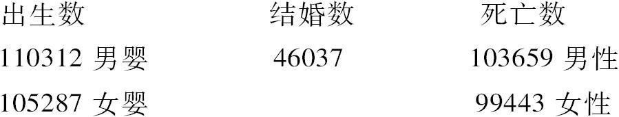
那么，人口与年出生数之比为
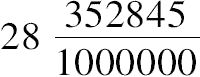
，这个比大于原来所估计的数值．用这个比去乘法国的年出生数，我们就会得出国家的人口总数．然而，以这种方式求出人口数偏离真实的人口数不超过一个给定值的概率是多少？为了解决这个问题且将上述的数据应用于这个问题的解决，我发现，如果假设法国的年出生数为1000000，这个假设会导出28352845的总人口，几乎可以用300000比1的赌注打赌：在这个结果中误差小于五十万．从上表中得出：男女婴出生数之比为22：21，结婚数与出生数之比为3：14.
在巴黎，受洗礼的男女婴数（之比）与22：21这个比值相差无几．从1784年起，人们开始按不同性别进行登记，到1784年底，在首都（巴黎）有393386个男婴和377555个女婴受洗．这两个数的比几乎接近于25：24.它显示出在巴黎有一个使得两性受洗人数趋于相等的特殊原因．如果将概率演算应用于这个问题，就会发现可以用238比1的赌去赌存在着这样一个原因，这一点足以促使人们值得去进行调查．经过再三的思考，我认为可以这样解释观察到的差异：那些农村和郊区的父母发现家庭养育儿子的好处，根据两性之间的出生比，相对于女婴，他们较少将男婴送到巴黎的孤儿院．这一点被这个孤儿院的登记表所证实．从1745年初至1809年底，这个孤儿院收纳了163499名男孩和159405名女孩．其中第一个数应该超过第二个数至少1/24，实际上，它只超过了1/38.这一点就证实了上述原因的存在，即如果忽略弃婴现象，在巴黎男女婴出生之比仍然是22：21.
上述结果意味着，我们可以把出生比作为从一个包含无数个白球和黑球的瓮中抽球，这些球以这样一种方式混合：每个球被抽到的可能性是相等的．但是，不同年份的同样季节的差异可能会对男女婴年出生数之比产生影响，法国经度局（Bureau of Longitudes）在其《年鉴》中每年发表国家人口的变化表格．这些表格自1817年起已经开始出版：在那一年及其以后的五年，有2962361个男孩和2781997个女孩出生，男孩的出生数与女孩的出生数之比非常接近于16/15，每年的比与这个平均结果相差很小，最小的比是在1822年，只有17/16，最大的是在1817年，是15/14.这些比值相当不同于以上发现的比22/21.将概率的分析应用于这个差异，在将出生比作为从瓮中抽球的假设下，就会发现这是不可能的．因为，尽管这个假设似乎是一个不错的近似，但并非是严格精确的．在上面我们已经描述的出生数中有一些私生子——200494名男孩和190698名女孩．为此，男孩出生数与女孩出生数之比就是20/19，比平均比值16/15要小．这个结果与孤儿的出生情况具有相同的意义，它似乎证明了在非婚生子女集体中两性的出生数比婚生子女集体中两性的出生数更加接近于相等．从法国北部到南部气候的差异似乎并没有对男女婴的出生比产生可见的影响．在最南部的三十个地区给出的这个比为16/15，与全法国的比值相同．
自从出生数被记录以来，男性的出生数恒定地超过女性的出生数，在巴黎和伦敦都是如此，这种现象在某些学者看来是对神圣上帝的证明．他们认为，如果不是这样，由于不断干扰事件进程和谐的不规则原因的缘故，女婴的年出生数早应该有几次大于男婴的年出生数了．
然而，这个证明是（对上述分析）滥用的一个新例证，它经常被视为终极原因的组成部分，而在对问题进行深入考察中，当我们拥有需要的数据去解决它们时，这个原因就消失了．某些规则的原因导致了男性出生的优势，正在谈论的稳定性就是它的一个结果，并且当年出生数非常大时，这个规则原因的作用就压倒了由于偶然性而引起的反常的作用影响．对于这个稳定性将长期保持的概率的探讨属于从过去事件推断将来事件发生的概率分析的一个分支，它也是以下分析的基础：通过对从1745年至1784年观测的出生情况的讨论，几乎可以用4比1的可能性去赌：在一个世纪的时间内，在巴黎男孩的年出生数将会超过女孩的出生数．所以，没有理由对已经发生了半个世纪的这种状况感到惊讶不已．
让我们再给出另外一个例子，这个例子是随着观察事件的数量的增加而显示出比值的稳定性的增加．让我们想象把一系列瓮排成一个圈，其中每一个瓮中都有大量的白球和黑球，起初在这些瓮中白球与黑球的比是非常不同的，例如，一个瓮中可能仅有白球，而另一个瓮中可能仅有黑球．如果依次从第一个瓮中抽取一个球放入第二个瓮中，将第二个瓮的球搅拌均匀，再从第二个瓮中抽出一球放入第三个瓮中，这个过程持续下去，直到从最后一个瓮中抽取一球放入第一个瓮中．然后这个过程重复地一次一次进行下去．概率的分析向我们显示，在这些瓮中白球与黑球之比将以等同且等于白球的总数和与黑球的总数之比而结束．这样根据这个变化的规则图式，在这些比之间的初始的差别随着一连串的变化而消失，而让位于简单的秩序．现在，假设在原来的瓮之间放一个新瓮，并且新瓮中白球与黑球的总数与原来瓮中的黑球与白球总数不同．如果在混合的瓮中重复地一次一次进行我们刚才讨论的程序，那么在原来瓮中建立的简单秩序将被打破，且白球与黑球的比将从一个到另一个有相当的差异．但是这种差异将一点点消失，最终让位于新的秩序——瓮中白球与黑球有相同的比．这些结果或许可以推广到自然地正在发生的组合，其中，给元素以活力的永恒不变的力建立了行为的规则图式，从而揭示了隐藏在一片混沌迷雾中的、由令人敬畏的规律所统治的系统．
总之，那些似乎是依赖于偶然性的现象显现出不断地接近固定比的趋向．因此，如果我们设想一下，这些比中的每一个都包含在一个足够小的区间内，观察的平均值落入到这个区间的概率与确定性（1）的差最终将小于一个任意给定的量．所以，通过将之应用于大数次观察的概率演算，我们可以认识到这些比的存在．但是，为了不使自己迷失在徒劳的猜测中，在寻找这些原因之前，必须使自己确信它们以一个概率被表明是可能的，这个概率不会允许我们将其作为偶然性所导致的一些反常．生成函数的理论给出这个概率一个非常简单的式子．这个式子是由对下面两个量的乘积积分得到的：a）一个是一个量的微分，根据它从大数次的观测推断出不同于真值的结果；b）一个小于1的常量（依赖于问题的本质）并且使之作为一个幂的底数，其指数是那个差的平方与观察次数之比．在给定的区间内进行积分并被从负无穷到正无穷的相同的积分所除，这个积分将给出与真正的值的差位于这些区间的概率．[24]这是基于大量的观察结果的概率的一般定律．